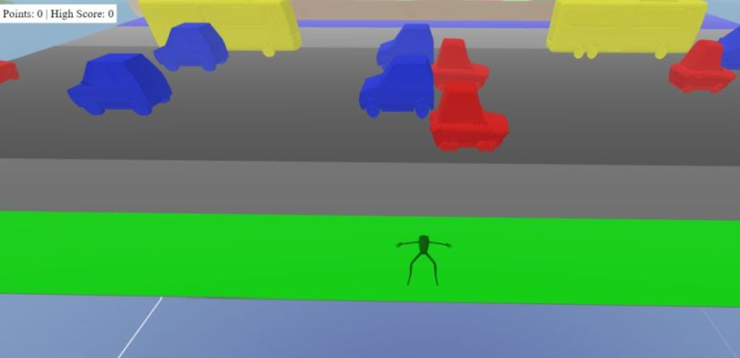
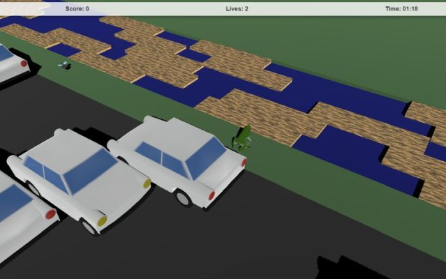
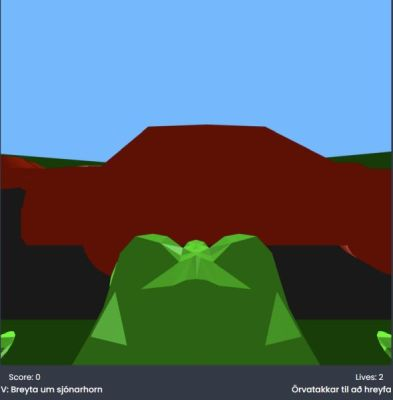
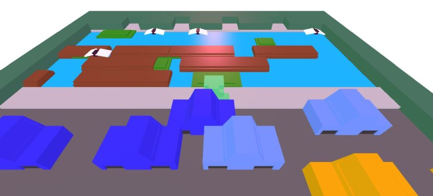
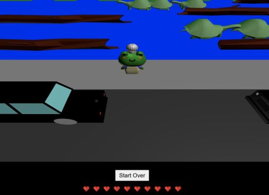
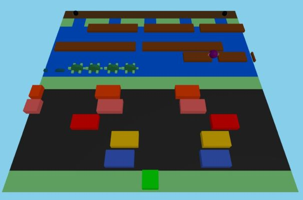
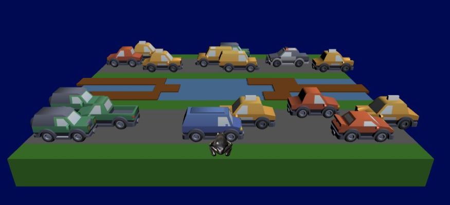
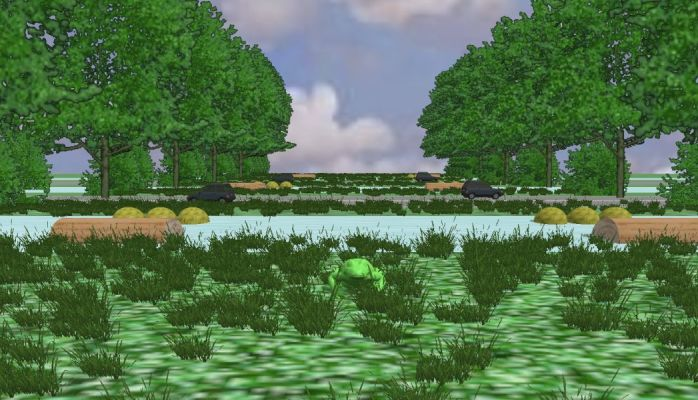
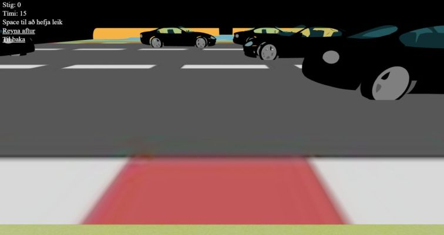

Nokkrar áhugaverðar lausnir á Forritunarverkefni 3
Tölvugrafík, haust 2024
Látið vita ef þið viljið ekki að ykkar lausn sé birt hér
- 
- Ari Gunnar Kristjónsson og Benjamín Reynir Jóhannsson
- 
- Bence Koczogh
- 
- Egill Magnússon
- 
- Elías Ver Bjarnason og Ragnar Björn Ingvarsson
- 
- Helga Solveig McAdam
- 
- João Silva Martins
- 
- Jonathan Jakub Otuoma
- 
- Sturla Freyr Magnússon
- 
- Þóra Dís Garðarsdóttir
hh (hja) hi.is, nóvember 2024.